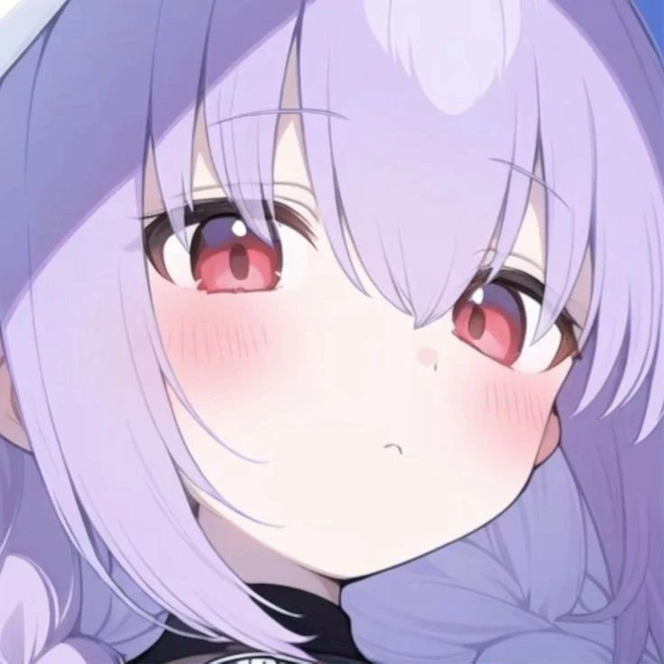
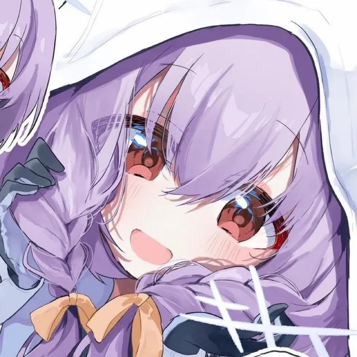
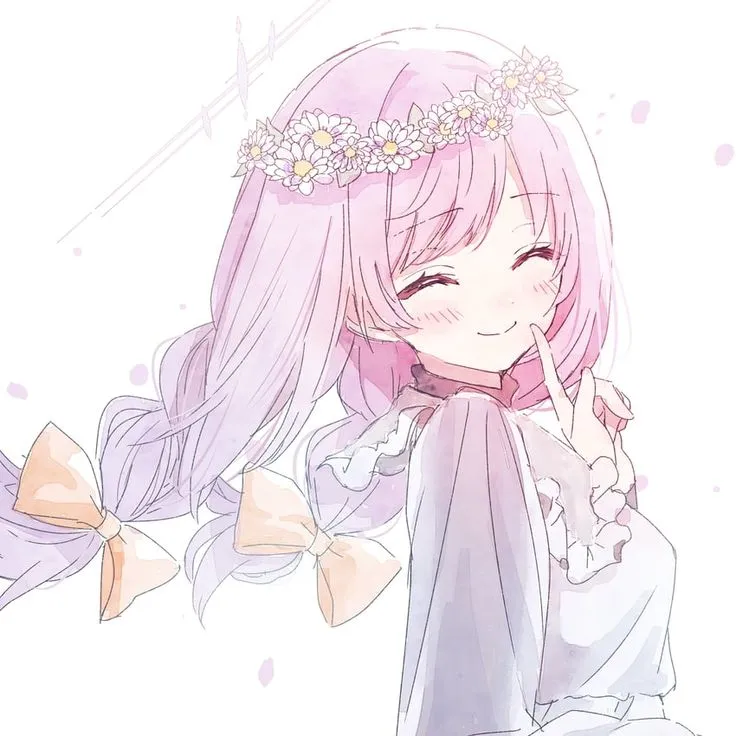
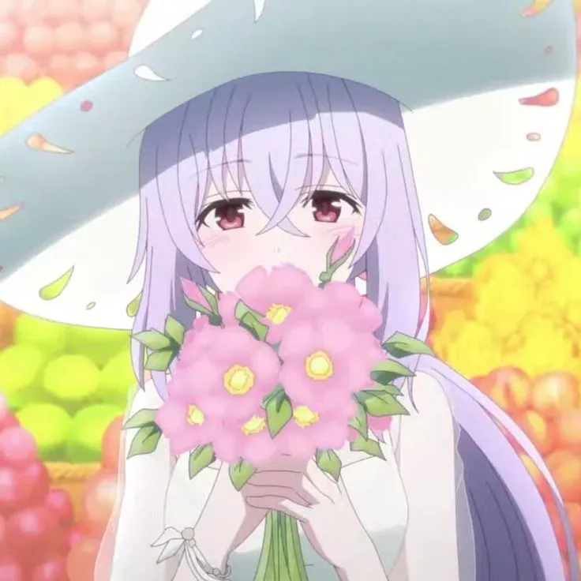

ATSUKO
ini adalah web tentang karakter Atsuko dari game blue archive.
ini adalah web tentang karakter Atsuko dari game blue archive.
Geser ke kanan atau kiri untuk melihat foto lainnya.




Atsuko memiliki garis keturunan darah bangsawan yang penting di Arius, sehingga ia sering dipanggil dengan julukan "Hime" (Putri) oleh rekan-rekannya di Arius Squad (Saori, Misaki, dan Hiyori).Ia tumbuh di bawah didikan dan kendali Beatrice, pemimpin religius Arius yang otoriter dan penuh kebencian. Masa kecilnya dihabiskan dalam lingkungan yang suram, penuh penderitaan, dan indoktrinasi konflik.Karena garis keturunannya, Atsuko dijadikan sebagai objek tumbal ritual oleh Beatrice untuk kepentingan ambisi kelamnya di Arius Basilica.Meskipun dibesarkan dalam suasana yang dingin dan kejam, Atsuko memiliki sifat yang tenang, lembut, menyukai berkebun, dan sangat peduli pada rekan-rekan Arius Squad. Ia juga pernah berinteraksi secara khusus dengan Azusa Shirasu yang dulu juga bagian dari Arius.Dalam Main Story Volume 3, Atsuko sempat menyerahkan dirinya demi menyelamatkan teman-temannya. Berkat bantuan Sensei dan Arius Squad, ia akhirnya berhasil diselamatkan dari rencana eksekusi tumbal oleh Beatrice.